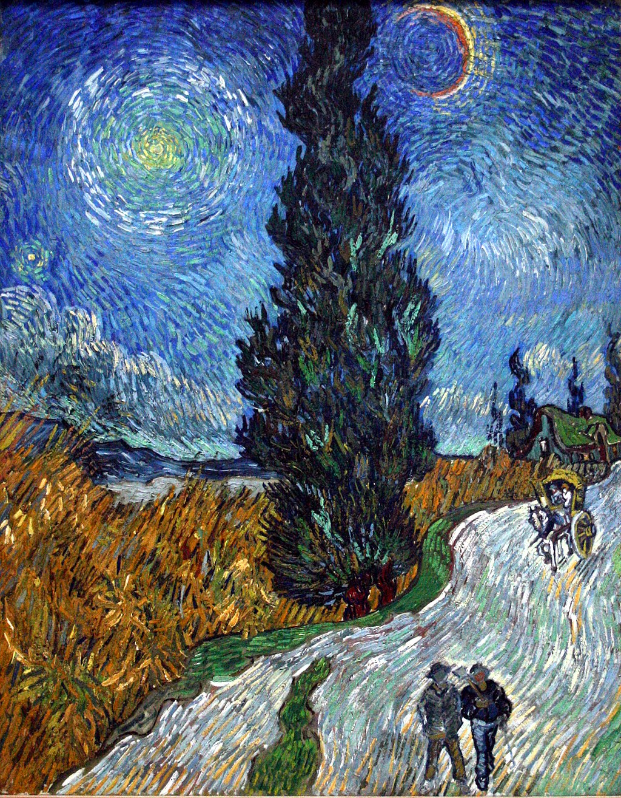

<head>
<meta charset="UTF-8" />
<meta name="keywords" content="drawing, painting" />
<meta name="description" content="drawings by Sunjy" />
<title>Sunjy</title>
<link rel="shortcut icon" type="image/x-icon" href="../../mImages/mCommon/favicon.ico" media="screen" />
<link rel="stylesheet" type="text/css" href="../../mCsses/mCommon/mCssA.css" />
<link rel="stylesheet" type="text/css" href="../../mCsses/mCommon/mCssB.css" />
<link rel="stylesheet" type="text/css" href="../../mCsses/mCommon/mCssC.css" />
<link rel="stylesheet" type="text/css" href="../../mCsses/mCommon/mCssD.css" />
<link rel="stylesheet" type="text/css" href="../../mCsses/mContent/mCssA.css" />
<link rel="stylesheet" type="text/css" href="../../mCsses/mContent/mCssB.css" />
<link rel="stylesheet" type="text/css" href="../../mCsses/mContent/mCssC.css" />
<link rel="stylesheet" type="text/css" href="../../mCsses/mContent/mCssD.css" />
</head>
<script type="text/javascript" src="../../mScripts/mContent/mContentAA.js" /></script>
<script type="text/javascript" src="../../mScripts/mContent/mContentAB.js" /></script>
<script type="text/javascript" src="../../mScripts/mContent/mContentAC.js" /></script>
<script type="text/javascript" src="../../mScripts/mContent/mContentAD.js" /></script>
<script type="text/javascript"></script> 
<script type="text/javascript">
document.write('<div class="mImgAbsolute"></div>');
/*
document.write('<p class="mFontSizeBColor" />From a white paper...</p>');
document.write('<table class="center"><tr><td>');
document.write('');
document.write('</td></tr></table>');
*/
</script>


<script type="text/javascript">
document.write('<p class="mFontSizeBColor" />Road with Cypress and Star</p>');
document.write('<p class="mFontSizeSColor" />“Road with Cypress and Star” by Vincent van Gogh is the last painting he made in Saint-Rémy-de-Provence, France. This view is not an actual landscape scene but a composition of the symbols or images that became important to Van Gogh and which expressed his feeling at this point in his life.<br><br>The large cypress tree in the middle of the composition acts like a giant obelisk dividing the piece. The pair of travelers are on their journey of companionship that Van Gogh had been seeking for so long and could not find. There are also two people in the horse-driven cart.<br><br>Van Gogh entered the Saint-Paul-de-Mausole asylum, a former monastery in Saint-Rémy in May 1889. Van Gogh had two cells with barred windows, one of which he used as a studio.<br><br>He was allowed short supervised walks, during which time he painted cypresses and olive trees, including this painting “Road with Cypress and Star.” Some of his works from this time are characterized by swirling stars in the night sky, such as this painting and “The Starry Night.”<br><br>Van Gogh was experimenting with his use of color and brushwork. Many of his works at this time are composed of graceful forms and swirling lines. The short, rhythmic wavy brushstrokes placed side by side engenders this painting with dynamism.<br><br>In an earlier letter to his brother Theo, van Gogh wrote that cypresses were:<br><br>“always occupying [his] thoughts.” <br><br>Vincent van Gogh found cypress trees “beautiful of line” and proportioned like an Egyptian obelisk. He wrote to his brother Theo:<br><br>“It astonishes me that no one has yet done them as I see them. It’s beautiful as regards lines and proportions, like an Egyptian obelisk. And the green has such a distinguished quality.”<br><br>After finishing this work, Van Gogh wrote to Paul Gauguin that the painting’s themes are similar to those of Gauguin’s work “Christ in the Garden of Olives.”<br><br>Christian allegory from “The Pilgrim’s Progress,” which Vincent had read, may have influenced this painting. The prominent road and cypress tree both extend beyond the edges of the canvas symbolizing the journey of life.<br><br>Art historians believe these paintings reflect van Gogh’s feelings that he would soon die. His paintings with the cypress trees and the swirling sky were metaphors for life in the infinite and eternal cosmos.<br><br>The evening star and crescent moon on either side of the tree are a cosmic perspective to the earthly scene below. Symbolically, the evening star on the left of the painting is not shown as potent as the emerging crescent moon on the right side.<br><br>The orientation of the night sky objects may have been influenced by a conjunction of heavenly bodies on 20 April 1890, when Mercury and Venus were at 3 degrees of separation and together had luminescence comparable to Sirius.<br><br>In May 1890, Van Gogh left the clinic in Saint-Rémy to move near to Dr. Paul Gachet in the Paris suburb of Auvers-Sur-Oise. Vincent died on 27 July 1890, aged 37.<br></p>');
document.write('<table class="center" /><tr><td>');
document.write('<br>The large cypress tree in the middle of the composition acts like a giant obelisk dividing the piece. The pair of travelers are on their journey of companionship that Van Gogh had been seeking for so long and could not find. There are also two people in the horse-driven cart.<br><br>Van Gogh entered the Saint-Paul-de-Mausole asylum, a former monastery in Saint-Rémy in May 1889. Van Gogh had two cells with barred windows, one of which he used as a studio.<br><br>He was allowed short supervised walks, during which time he painted cypresses and olive trees, including this painting “Road with Cypress and Star.” Some of his works from this time are characterized by swirling stars in the night sky, such as this painting and “The Starry Night.”<br><br>Van Gogh was experimenting with his use of color and brushwork. Many of his works at this time are composed of graceful forms and swirling lines. The short, rhythmic wavy brushstrokes placed side by side engenders this painting with dynamism.<br><br>In an earlier letter to his brother Theo, van Gogh wrote that cypresses were:<br><br>“always occupying [his] thoughts.” <br><br>Vincent van Gogh found cypress trees “beautiful of line” and proportioned like an Egyptian obelisk. He wrote to his brother Theo:<br><br>“It astonishes me that no one has yet done them as I see them. It’s beautiful as regards lines and proportions, like an Egyptian obelisk. And the green has such a distinguished quality.”<br><br>After finishing this work, Van Gogh wrote to Paul Gauguin that the painting’s themes are similar to those of Gauguin’s work “Christ in the Garden of Olives.”<br><br>Christian allegory from “The Pilgrim’s Progress,” which Vincent had read, may have influenced this painting. The prominent road and cypress tree both extend beyond the edges of the canvas symbolizing the journey of life.<br><br>Art historians believe these paintings reflect van Gogh’s feelings that he would soon die. His paintings with the cypress trees and the swirling sky were metaphors for life in the infinite and eternal cosmos.<br><br>The evening star and crescent moon on either side of the tree are a cosmic perspective to the earthly scene below. Symbolically, the evening star on the left of the painting is not shown as potent as the emerging crescent moon on the right side.<br><br>The orientation of the night sky objects may have been influenced by a conjunction of heavenly bodies on 20 April 1890, when Mercury and Venus were at 3 degrees of separation and together had luminescence comparable to Sirius.<br><br>In May 1890, Van Gogh left the clinic in Saint-Rémy to move near to Dr. Paul Gachet in the Paris suburb of Auvers-Sur-Oise. Vincent died on 27 July 1890, aged 37.<br>" />');
document.write('</td></tr></table>');
</script>


